Kim ne yapacak? Hangi ekran nasıl görünecek?
Projedeki toplam iş yükü özeti
Tüm ekranlar bu sisteme uyacak. Tasarıma başlamadan önce okunması zorunludur.
| Kullanım Yeri | Font | Ağırlık | Renk |
|---|---|---|---|
| Ekran Başlıkları | Fredoka One | Regular | #f5e6c8 kum |
| Buton Metinleri | Nunito | 800 ExtraBold | Butona göre değişir |
| Gövde / Açıklama | Nunito | 600 SemiBold | #c8dde8 |
| HUD Sayılar | Fredoka One | Regular | Duruma göre kırmızı/yeşil |
| Tutorial / Kitap | Nunito | 400 Regular | #4a3520 kahve |
 Düz beyaz bg, ham yeşil butonlar, logo ile popup çakışıyor
Düz beyaz bg, ham yeşil butonlar, logo ile popup çakışıyor
| Görev | Kim | Detay |
|---|---|---|
| Arka plan sahne | 2D/3D Artist | Tropikal ada + okyanus arka planı. Palmiyeler, dalgalar, gün batımı veya sabah ışığı. PNG render veya paralaks katmanlı 2D. |
| Logo tasarımı | 2D/3D Artist | "SOGGY BREADS" Fredoka One, dalgalı su efekti. "Hırto Games" sub-logo. 1920px genişlik PNG. |
| Buton paneli | UI Tasarımcı | Yarı şeffaf ahşap panel üzerinde 4 buton: OYNA · AYARLAR · İSTEK LİSTESİ · ÇIKIŞ. Oyun renk paletine göre styled. |
| LOAD SAVE popup ayrıştırma | UI Tasarımcı + Programcı | OYNA butonuna tıklayınca ayrı modal açılmalı (bkz. UI-02). Logo asla başka elemanla örtüşmeyecek. |
| Discord & Bug butonları | UI Tasarımcı | Sol alt: Discord resmi rengi #5865F2. Sağ alt: Bug ikonu (kendi ikonumuz, ham emoji değil). Küçük ve dikkat dağıtmayan boyut. |
| Giriş animasyonu | Programcı | Logo yukarıdan iner (0.6s ease-out), butonlar soldan kayar (0.1s gecikme). Arka plan yavaş zoom-out. |
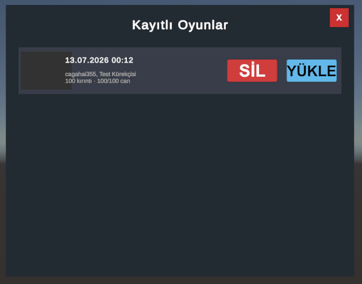
Kayıtlı Oyunlar modal — koyu tema, SİL/YÜKLE butonları| Görev | Kim | Detay |
|---|---|---|
| Modal çerçeve | UI Tasarımcı | Ahşap veya harita stili çerçeve. Başlık Fredoka One. Arka plan blur (ana menü bulanık görünsün). |
| Kayıt satırı kartı | UI Tasarımcı | Sol: tarih/saat. Orta: oyuncu adı · rol · can · kırıntı. Sağ: SİL (kırmızı) + YÜKLE (ekmek kahvesi). Scroll edilebilir liste. |
| Boş durum | UI Tasarımcı | Kayıt yoksa ekmek karakteri omuz silker + "Henüz kayıtlı oyun yok" metni. |
Multiplayer'a giriş ve bekleme ekranları.
 Düz gri bg, ham yeşil butonlar, "ÖĞRETİCİ" iki satıra kırılmış
Düz gri bg, ham yeşil butonlar, "ÖĞRETİCİ" iki satıra kırılmış
| Görev | Kim | Detay |
|---|---|---|
| Arka plan | 2D/3D Artist | Ana menüyle aynı tropikal tema veya gece versiyonu. |
| Buton layout | UI Tasarımcı | LOBİ OLUŞTUR + KOD İLE GİRİŞ büyük ikon+metin kartları. Alt sıra: ÖĞRETİCİ · AYARLAR · GERİ yatay ve tek satırda. Metin asla 2 satıra kırılmayacak. |
| Kod giriş alanı | UI Tasarımcı + Programcı | KOD İLE GİRİŞ seçilince 6 haneli ayrı kutucuklu input açılır. GİRİŞ butonu yanında. |
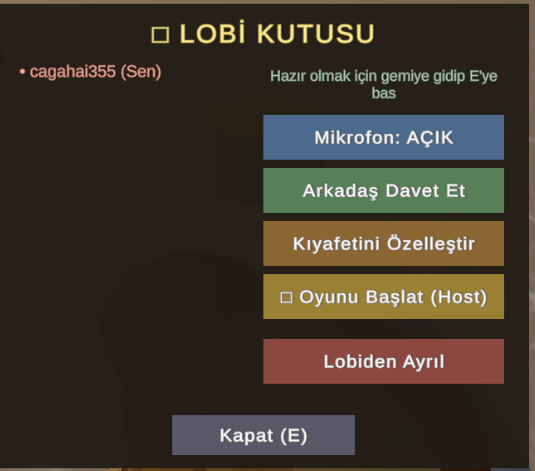
LOBİ KUTUSU — 5 farklı renk buton, hiç hiyerarşi yok| Görev | Kim | Detay |
|---|---|---|
| Buton hiyerarşisi | UI Tasarımcı | Büyük-Birincil: Oyunu Başlat — ekmek kahvesi. Orta-İkincil: Davet Et, Kıyafet, Mikrofon — okyanus mavi. Küçük-Tehlikeli: Lobiden Ayrıl — reçel kırmızısı. Kapat — gri/şeffaf. |
| Oyuncu slotları | UI Tasarımcı | Her oyuncu: küçük ekmek avatar + isim + "Hazır ✓" badge. Boş slotlar "Bekleniyor..." gösterir. |
| Lobi kodu | UI Tasarımcı | Panel üstünde büyük, kopyalanabilir lobi kodu + 📋 kopyala ikonu. |
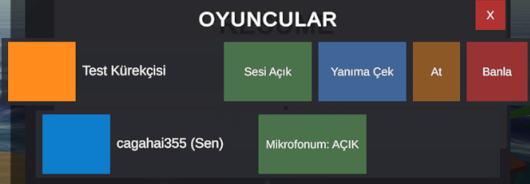
Turuncu/mavi kare avatarlar, aksiyon butonları satırı| Görev | Kim | Detay |
|---|---|---|
| Oyuncu satırı stili | UI Tasarımcı | Kare yerine yuvarlak köşeli ekmek silüeti avatar. Mikrofon durumu küçük badge olarak avatarda. |
| Aksiyon ikonları | UI Tasarımcı | Düz buton satırı yerine ikon + tooltip. At ve Banla için "Emin misin?" onayı (programcı). |
Oyuna girerken gösterilen yükleme ekranı.
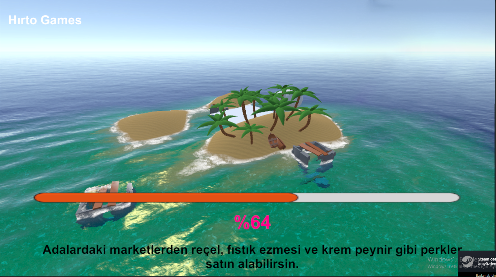
Ada arka planı güzel — ama turuncu bar + pembe %64 + sistem fontu sorunlu| Görev | Kim | Detay |
|---|---|---|
| Yükleme barı | UI Tasarımcı | Ekmek kızarma teması: boşken soluk hamur (#f0d9b5), dolarken kızarmış ekmek (#c48b47) → tam dolunca koyu kahve (#8b5e2a). Bar üzerinde küçük ekmek ikonu kayar. Radius 20px. |
| Yüzde yazısı | UI Tasarımcı | Pembe/magenta KALDIRILACAK. Fredoka One, renk #f5e6c8 (kum), text-shadow 1px siyah. Barın altında ortalı. |
| Hırto Games logo | 2D/3D Artist | Sol üst küçük logo. Beyaz, %80 opacity. Altında "Soggy Breads" subtitle. |
| İpucu metin kutusu | UI Tasarımcı | Alt orta: #0d2233 %70 opacity panel üzerinde Nunito 600 metin. Yanında küçük ekmek ikonu. |
Oyun sırasında ekranda sürekli görünen elemanlar.
 Kırmızı can barı + mavi kuruluk barı — sade dikdörtgenler, ikon yok
Kırmızı can barı + mavi kuruluk barı — sade dikdörtgenler, ikon yok
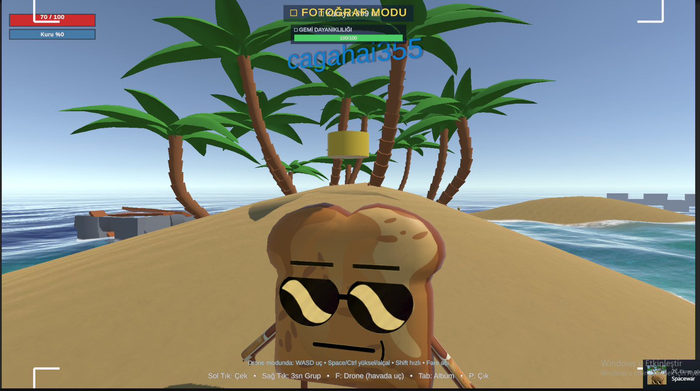
Can barları sol üstte oyun içinde böyle görünüyor| Görev | Kim | Detay |
|---|---|---|
| Can barı yeniden tasarımı | UI Tasarımcı + 2D/3D Artist | Sol: küçük ekmek yüz ikonu. Bar dolu #c1292e kırmızı, azalınca solar. %25 altında titreme + yanıp sönme animasyonu. |
| Kuruluk barı | UI Tasarımcı + 2D/3D Artist | Sol: küçük su damlası ikonu. %0 açık mavi (kuru), %100 koyu mavi + damla efekti (ıslak). |
| İkon çizimi | 2D/3D Artist | 2 adet 32×32px PNG: (1) Ekmek yüz can ikonu, (2) Su damlası kuruluk ikonu. Kalın kontur, düz renk. |
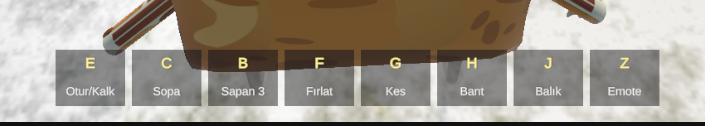
8 gri slot: E/C/B/F/G/H/J/Z tuşları — sarı harf, ham Unity UI Hotbar alt ortada görünüyor — oyun içi konumu
Hotbar alt ortada görünüyor — oyun içi konumu
| Görev | Kim | Detay |
|---|---|---|
| Slot çerçeve | UI Tasarımcı | Ahşap görünümlü slot arka planı. Aktif slot altın parlıyor. Hover büyür. 56×56px, radius 8px. |
| 8 Eylem ikonu çizimi | 2D/3D Artist | 48×48px PNG: Sandalye (Otur), Tahta (Sopa), Sapan, Ok (Fırlat), Makas (Kes), Yara bandı (Bant), Balık, Gülüz (Emote). Kalın kontur, Soggy Breads stili. |
| Tuş etiketi stili | UI Tasarımcı | Slot sol üst köşesinde küçük koyu yuvarlak kare içinde beyaz harf. Fredoka One 10-12px. |
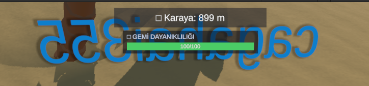
"□ Karaya: 899m" + "□ GEMİ DAYANIKLILIĞI" — □ unicode sorunu var| Görev | Kim | Detay |
|---|---|---|
| □ Unicode düzeltmesi | Programcı | "\u25A1" Unity'de desteklenmiyor. İkonlar Image component veya TMPro sprite atlas ile kullanılacak. |
| Gemi bar ikonu | 2D/3D Artist | 32×32px tekne ikonu. 3 durum: tam sağlam / hafif hasarlı / paramparça. |
| Bar tasarımı | UI Tasarımcı | Şeffaf arka plan, yeşil bar korunabilir. Karaya mesafe yanında küçük ada ikonu. |
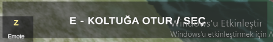
"E - KOLTUĞA OTUR / SEÇ" — koyu bar üzerinde, çalışıyor| Görev | Kim | Detay |
|---|---|---|
| Font ve stil güncelleme | UI Tasarımcı | Nunito 700. Tuş (E) görsel klavye tuşu: koyu bg, hafif üst highlight. Aksiyon metni yanında. Arka plan #0d2233 %70, radius 8px. |
ESC tuşuyla açılan oyun içi duraklatma ekranı.
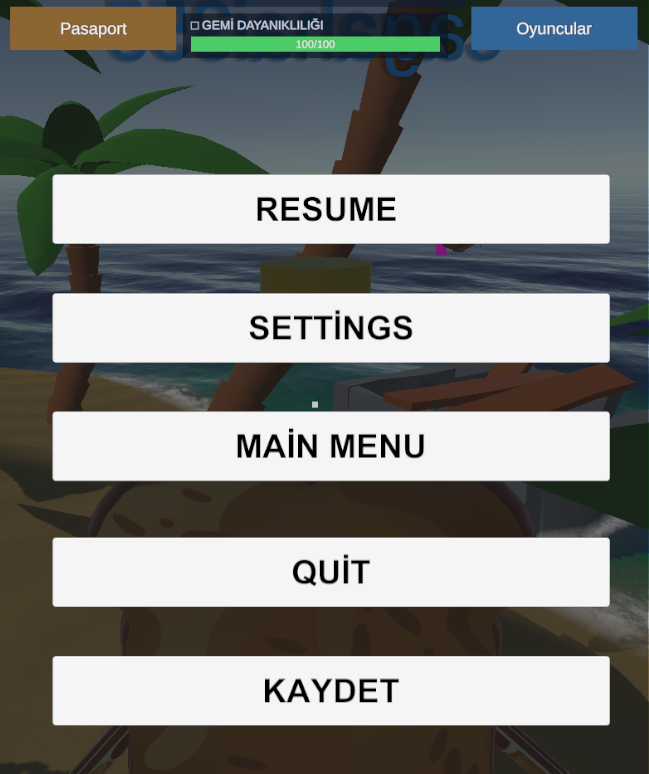
Beyaz opak butonlar, İngilizce metin (RESUME/QUIT), ham sekme barı| Görev | Kim | Detay |
|---|---|---|
| Arka plan blur overlay | Programcı | Oyun arka planı blur efektiyle görünsün. Üzerine %60 koyu overlay (#0d2233). Tam opak beyaz alan kalkacak. |
| Sekme tasarımı | UI Tasarımcı | 3 sekme: Pasaport ikonu+metin, Gemi ikonu+"Gemi Durumu", Oyuncular ikonu+metin. Aktif sekme altı çizili. Geçiş animasyonlu (slide). |
| Buton tasarımları | UI Tasarımcı | DEVAM ET: büyük, ekmek kahvesi. AYARLAR + ANA MENÜ: okyanus mavi border. KAYDET: palmiye yeşili. OYUNDAN ÇIK: reçel kırmızısı, en altta, küçük. |
| Türkçeleştirme | Programcı | RESUME→DEVAM ET, SETTINGS→AYARLAR, MAIN MENU→ANA MENÜ, QUIT→OYUNDAN ÇIK. |
Teknedeki rol seçme ekranı.
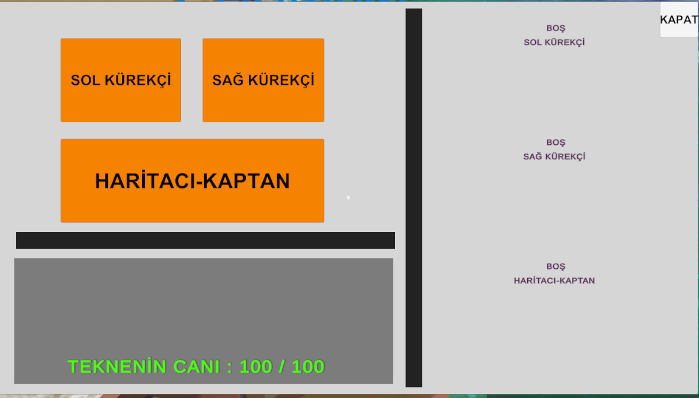
Düz turuncu büyük kutular — SOL KÜREKÇİ, SAĞ KÜREKÇİ, HARİTACI-KAPTAN. Hiç illüstrasyon yok. Kürekçi (Sol) kontrol kartı — rol anlatımı için referans içerik
Kürekçi (Sol) kontrol kartı — rol anlatımı için referans içerik
| Görev | Kim | Detay |
|---|---|---|
| Rol kartı tasarımı | UI Tasarımcı + 2D/3D Artist | Her rol için illüstrasyon içeren kart: Sol/Sağ Kürekçi = kürek tutan ekmek. Haritacı-Kaptan = dürbünlü ekmek. Alt kısımda 1-2 cümle rol açıklaması. Seçilince altın kenar parlar. |
| 3 Rol ikonu | 2D/3D Artist | 128×128px PNG: Kürek / Harita+pusula / Kaptan şapkası. Kalın kontur. |
| Oyuncu slotu göstergesi | UI Tasarımcı | Her kartın altında "Oturan: [İsim]" veya "Boş — E ile al". Dolu rol kartı kilitli görünür. |
| Tekne canı barı | UI Tasarımcı | Yeşil yazı yerine HUD'daki gemi barıyla aynı görsel dil. |
PASAPORT ekranı — 3D dönen önizleme, özellik seçiciler, hazır karakterler
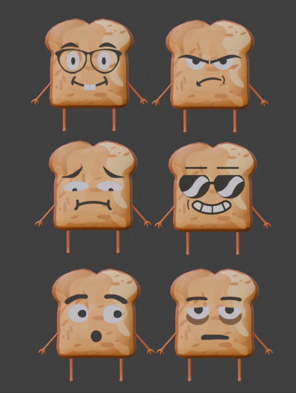
6 farklı yüz ifadesi konsept art — özelleştirme referansı| Görev | Kim | Detay |
|---|---|---|
| Panel görsel cila | UI Tasarımcı | Bej rengi ve pasaport estetiği korunacak. Fredoka One başlık, önizleme alanına hafif çerçeve. |
| ◄ ► okları | UI Tasarımcı | Ham üçgen yerine yuvarlak arka planlı ok butonu, hover'da renk değişimi. |
| Hazır Karakter kartları | UI Tasarımcı | Düz mavi butonlar yerine mini önizleme içeren kartlar. Hover'da karakter adı tooltip. |
| Şapka Rengi seçici | UI Tasarımcı + Programcı | Ham sarı kutu yerine 8-12 hazır renk paleti popup'ı. |
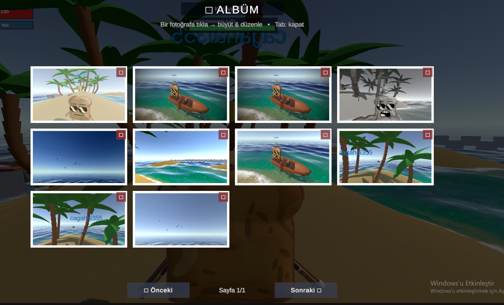
Grid'de fotoğraflar, Önceki/Sonraki sayfalama, her kartın sağ üstünde ikon| Görev | Kim | Detay |
|---|---|---|
| Polaroid çerçeve stili | UI Tasarımcı | Beyaz polaroid çerçeve, altında tarih/saat küçük yazı. Hover'da döner/büyür. |
| Fotoğraf büyütme modu | UI Tasarımcı + Programcı | Tıklanınca tam ekran, sağda efektler paneli (bkz. UI-15). ESC veya X ile kapatma. |
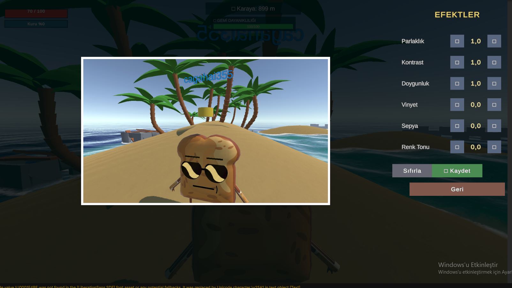
EFEKTLER paneli: Parlaklık, Kontrast, Doygunluk, Vinyet, Sepya, Renk Tonu| Görev | Kim | Detay |
|---|---|---|
| ◄ ► → gerçek slider | UI Tasarımcı + Programcı | ◄ 1,0 ► yerine sürüklenebilir slider + sağda sayısal değer. |
| Font ve renk | UI Tasarımcı | Sistem fontu → Nunito. Siyah metin → renk paletine uygun. |
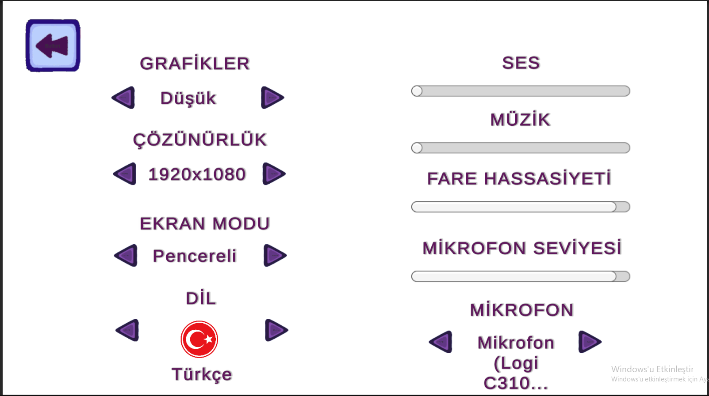
Sol: Grafikler/Çözünürlük/Ekran Modu/Dil. Sağ: Ses/Müzik/Fare/Mikrofon slider'ları. Mor renk paletinde.| Görev | Kim | Detay |
|---|---|---|
| Arka plan ve renk paleti | UI Tasarımcı | Beyaz arka plan → koyu deniz tonu (#0d2233). Mor renkler kaldırılacak. Başlıklar: kum sarısı #f5e6c8. Değer metinleri: açık mavi #c8dde8. |
| Slider stili | UI Tasarımcı | Gri slider → ekmek kahvesi track, altın thumb. Ses barları için hoparlör ikonu eklenecek. |
| Geri butonu stili | UI Tasarımcı | Sol üstteki mor geri butonu → oyun standardına getirilecek (okyanus mavi, yuvarlak köşe). |
 "Hoş Geldin, Ekmek Kardeşim! □" — ahşap çerçeve, krem kağıt, 1/32 sayfa
Kürekçi (Sol) talimat kartı — tutorial içerik referansı
"Hoş Geldin, Ekmek Kardeşim! □" — ahşap çerçeve, krem kağıt, 1/32 sayfa
Kürekçi (Sol) talimat kartı — tutorial içerik referansı
| Görev | Kim | Detay |
|---|---|---|
| □ Unicode düzeltme | Programcı | TMPro sprite asset veya Image component ile ikon eklenmeli. |
| Sayfa illustrasyonları | 2D/3D Artist | 32 sayfanın öncelikli 10'u için küçük çizim: Hareket, Kürek, Balık Tutma, Martı Saldırısı, Pazaryeri, Rol Seçme vb. Karakalem/komik Soggy Breads stili. |
| Sayfa çevirme animasyonu | Programcı | Ok ile sayfa değişince hafif flip veya slide animasyonu. |
KÜREKÇİ (SOL) — W/S/A/D/R/E/Space kontrolleri açıklanmış
| Görev | Kim | Detay |
|---|---|---|
| Kart stili | UI Tasarımcı | Tutorial kitabıyla aynı krem/ahşap stil. Her tuş kombonu görsel tuş etiketiyle. Mavi arka plan kalkacak. |
| Haritacı & Sağ Kürekçi kartları | UI Tasarımcı | Diğer 2 rol için de aynı tarzda kart oluşturulacak. |
Balık tutma, geri bildirim, hedefleme.
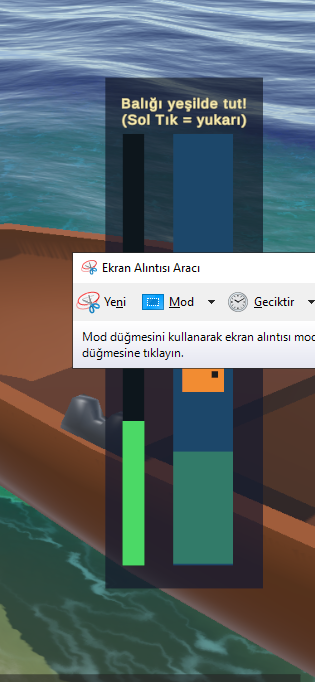
"Balığı yeşilde tut!" — sol çubuk (oyuncu), sağ çubuk (hedef). Ham dikdörtgenler.| Görev | Kim | Detay |
|---|---|---|
| Bar ve çerçeve tasarımı | UI Tasarımcı + 2D/3D Artist | Barların yanına olta ve balık ikonları. Hedef bölge vurgulu renk. Bar arka planı hafif dalga deseni. |
| Başarı/başarısızlık geri bildirimi | Programcı + UI Tasarımcı | Tutulunca "🐟 Yakalandı!" popup + balık görseli. Kaçarsa "Kaçtı!" animasyonu. |
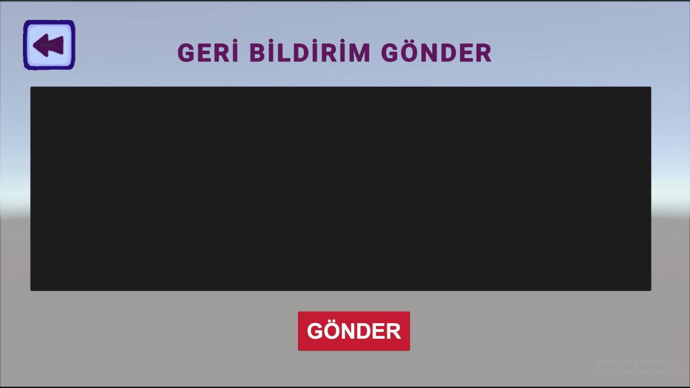
"GERİ BİLDİRİM GÖNDER" — büyük siyah input kutusu, kırmızı GÖNDER butonu| Görev | Kim | Detay |
|---|---|---|
| Input alanı ve tema | UI Tasarımcı | Siyah → koyu gri #1a2e40, hafif border. Arka plan → oyunun koyu teması. Placeholder: "Karşılaştığın sorunu yaz..." |
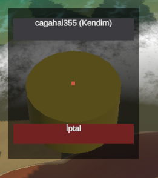
Dairesel altın hedef göstergesi + oyuncu adı + kırmızı İptal butonu| Görev | Kim | Detay |
|---|---|---|
| Hedefleme dairesi | UI Tasarımcı | Daha ince ve keskin çizgilerle daire. Merkez nokta daha görünür. Hangi uzuv seçildiği göstergesi (Sol Kol / Sağ Kol / Kafa) üstte eklenecek. |
| İptal butonu stili | UI Tasarımcı | Kırmızı buton korunabilir ama font oyun standardına getirilecek. |